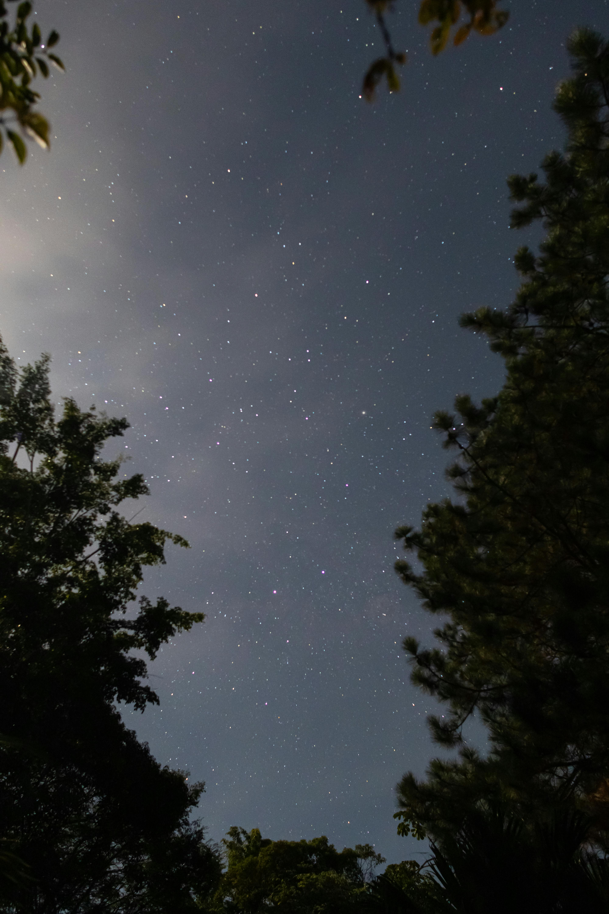

| Você dá meia volta e tenta sair dali. Infelizmente os berros não param. Você continua, acelerando o seu passo, mas os berros parecem cada vez mais próximos. Quase como se estivessem bem atrás de você. Por um momento, a ideia de olhar por cima de seu ombro passa na sua mente. |  |
|---|